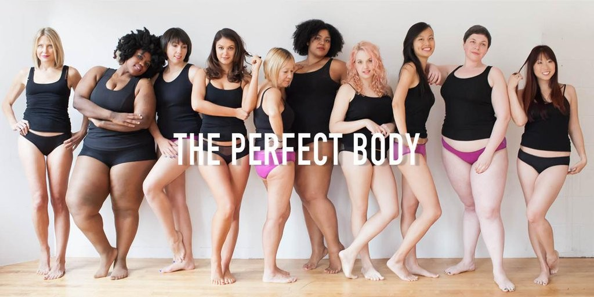

Body Positivity
This corner is about Body Positivity.I created this page/corner because I, myself as a child all the way to my teens years struggled with confidence and self-love.No one was there to tell me it's okay to be different on tv as a child on up you mostly seen "perfectly shaped"(to society) women.And if they were different they were usually not playing the main role.Society
created this standard "the perfect body," no one looked outside of that.Today we may call it the hourglass shape or coke bottle figure, slim waist and thick hips.Today it's almost expected for a person to have a flat stomach and big rear, and if they don't its "gross" or "she has a nasty shape" or she should go see the infamous Dr.Miami and get whatever part of her body fixed, as to say she's broken or something.
I am here to tell every beautiful woman reading this that their body is perfect. No matter if you're a size 00 or a size 30 , XXS or a 8x, you are beautiful. God made all of us perferctly he made no mistake every bone that shows,every gap, every roll, every dimple of cellulite, every stretch mark was made perfectly etched on your skin by the greatest artist of all time.
Tips to loving all of you:
1) Tell yourself you are beautiful,confident,intelligent,determined,stong aloud in the mirror everyday.
2) Meditate, let out all negative energy every day
3) Love on the areas of your body you dispise most.
4)Pamper yourself often;Go get a massage, get your nails done, get your hair done, get a facial,buy that purse you've been in love with.
5) Fall in love with yourself; look in the mirror and smile for a while,write your name on everything, sit and think about how great you are think of situations where nobody would've have got through but you.
6) Put up inspirational,self love, to-do, goals up everywhere
